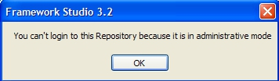

Administrative Mode
Für einige Aktionen auf dem Repository ist es notwendig, dass alle Entwickler das Repository verlassen:
Labeln einer Version und öffnen einer neuen
Importieren von Packages
Update des Repositories
Einige Daten werden im Repository mit Triggern bearbeitet. Zudem gibt es Absicherungen durch Constraints. Bei den oben aufgeführten Aktionen werden die Trigger und Constraints zum Teil deaktiviert. Das ist aus Performance-Gründen notwendig. Dieses Deaktivieren hätte ggf. zur Folge, dass im Repository falsche Daten entstehen können.

Ist der Admin-Mode aktiviert, wird der Menüeintrag rot hervorgehoben.

Der Modus kann nur aktiviert werden, wenn kein Entwickler am Repository angemeldet ist. Ist dies der Fall, wird ein Dialog angezeigt mit der Information, welche Benutzer derzeit noch angemeldet sind und der Option diese Sitzungen zu beenden.

Falls noch Benutzer angemeldet sind, wird dieser Dialog angezeigt. Hier gibt es die folgenden Möglichkeiten:
Cancel – den Vorgang abbrechen
Retry – es erneut versuchen, nachdem z.B. dem Benutzer Bescheid gegeben wurde
Kill User Sessions – die Sitzungen der Benutzer zu beenden. Bei dieser Aktion wird 130 Sekunden gewartet. Das ist die Zeit, die im Extremfall benötigt wird, bis ein Benutzer zum Beenden seiner Sitzung gezwungen wurde. (60 Sekunden bis zur Hinweismeldung + 60 Sekunden bis zum endgültigen Abbruch + 10 Sekunden Reserve)
Während dieser Dialog angezeigt wird, können sich keine neuen Benutzer mehr anmelden.
Befindet sich ein Repository im Admin-Mode, können sich keine Benutzer mehr darauf anmelden. Diese erhalten dann folgende Meldung.

Sollte man vergessen, dass der Admin-Mode aktiv ist, wird man beim Schließen des Package-Managers darauf aufmerksam gemacht.